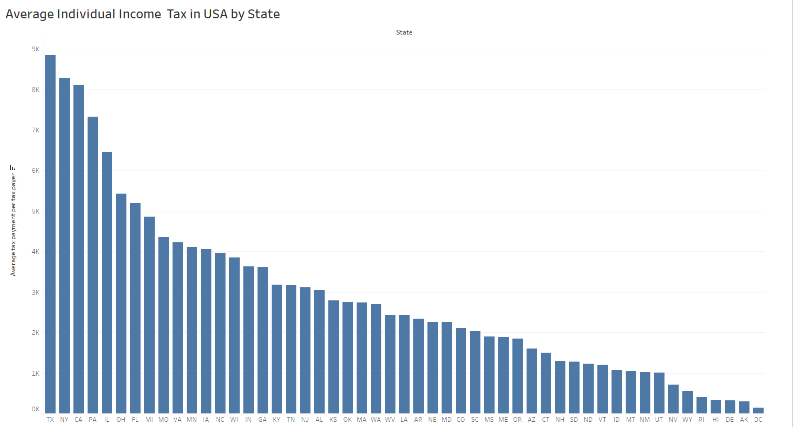
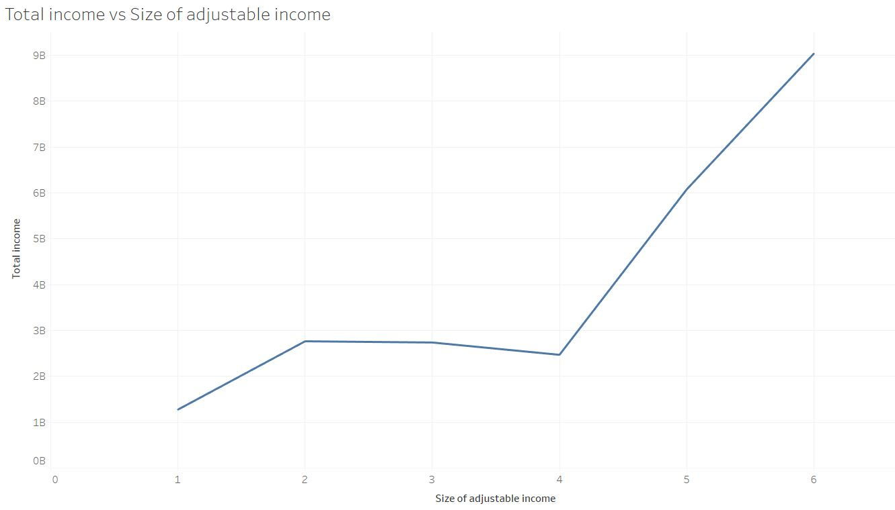

Exploring Individual Income Tax Return related to Investments and Expenses in USA (tax year 2019)
by Sadam Asen and Rock Chan {:class="img-responsive"}
Photo by Kelly Sikkema on Unsplash
Introduction
Taxes are the primary source of revenue for governments. Among other things, this money is spent to improve and maintain public infrastructure, and fund public schools, emergency services, welfare programs, and national security or defense. (Kagan, 2021) Every year, the US Internal Revenue Service (IRS) collects data about Individual income tax returns. In this project we use a data collected for tax year 2019. This data contains relatively large numbers of columns, which makes the data collection process very expensive and difficult to do some data analysis like creating models. In this project, we will visualize the data, figure out the correlation and relationship between some attributes, and create a model for prediction purposes. This data analysis benefits government officials to report and make projections and researchers in making policies and research taxpayer compliance and administration.

Photo by Olga DeLawrence on Unsplash
Nature of the Data Curation
Individual income tax return data at the state and ZIP code level is collected by US Internal Revenue Service (IRS). The Internal Revenue Service (IRS) is a U.S. government agency responsible for the collection of taxes and enforcement of tax laws (such as the wash sale rule).1 Established in 1862 by then-President Abraham Lincoln, the agency operates under the authority of the U.S. Department of the Treasury, and its primary purpose is the collection of individual income taxes and employment taxes. The IRS also handles corporate, gift, excise, and estate taxes. (Segal, 2021)
Photo by AbsolutVision on Unsplash
• Why did they collect the data (purpose)?
- To make projections
- To prepare reports
- To make estimates of frequencies of taxpayer entries recorded on the applicable lines of the forms and schedules filed with corporation tax returns
- To research taxpayer compliance and administration.
- To estimate gross domestic product
- To help in the development of national income accounts.
- For tax policy research.
Individual tax statistics data are numerical and discrete. The IRS provides data for the tax result each year. The individual tax statistics data are a very detailed category for each tax element. Individual tax statistics only provide the number of taxpayers in each state. There are no names or details of each person with their tax payment. Privacy and quality are accurate and easy to read.
The size of Individual income tax return data at the state and ZIP code level contains over 165k records and 152 attributes which shows the data contains every single detail about an individual tax return, but this large size is somehow difficult to do some analysis like creating a model or clustering. Since the data has 152 columns it is difficult and visually less appealing to put the exact description of each column therefore this description was represented by some variables. The data along with the documentation guide available for free source.
Photo by Mika Baumeister on Unsplash
In this project we are trying to answer the following questions.
1) Visualize average individual income at state level. 2) Visualize average individual tax at state level. 3) Calculate the correlation between education credit and total income. 4) What is the correlation between taxable income and Itemized deduction? and What is the correlation between taxable income and Standard Deduction? compare the results.
Requirements and Resources needed for the Project
In this project, Tableau and R is used for map-based visualization. Python is used for initial descriptive statistics and correlation analysis. Since the data has 152 attributes and each attribute was assigned by a variable instead of descriptive column names, we had to select some of the attributes and assign column names in the data frame based on the requirements of our data analysis and visualization using panda’s package in python.
Descriptive Analysis of the Dataset
The above table show the mean, standard deviation, minimum of total income, ordinary dividends, tax refund and standard deduction fields in the IRS dataset.
Findings of our Analysis
Visualization of Average Individual Income at state level

Average income In Washington DC, Connecticut and Massachusetts is highest where West Virginia and Mississippi are the lowest. Generally average income in west cost is higher and lower in the south.
Visualization of Average Individual Income Tax at state level

Average individual Income tax in Texas, New York, and California is higher where in Wasington DC, Alaska and Delware is the lowest.Even though dc has the highest average individual income, it has the lowest Average individual tax. This implies most DC residents earn the lowest income and some residents earn the highest income which influences the district’s average income. In this case, we need to use median income which is less influenced by the high income of a few residents.

Size of adjusted gross income are ranked from 1 to 6. 1 = 1 to 25000, 2 = 25000 to 50000, 3 = 50000 to 75000, 4 = 75000 to 100000, 5 = 100000 to 200000, 6 = 200000 or more The above graph show the total income per each of the ranked. Most of the people are at 200000 or more. But as we see in the graph, there are more people 25000 to 50000 than 75000 to 100000.
3) Calculate the correlation between education credit and total income

The graph of correlation of the between education credit and total income look like there are two lines. As the above graph which show that there are lowest and highest income group have the most people. There is no correlation because lowest and highest income group has a different rate of using income vs education.
Correlation graph with only group 1 = 1 to 25000
Correlation graph with only group 5 = 100000 to 200000. As we can see the above two graph, there is a stronger correlation between total income and education credit after the data being seperated. We can consult that there is a relation between total income and education credit but only if we seperate data into correct group.
4) What is the correlation between taxable income and Itemized deduction? and What is the correlation between taxable income and Standard Deduction? compare the results.
Correlation Heat Map of the Dataset
Total income adjusts, and adjusted gross income has a strong correlation which is higher than 0.8. The interesting thing is a standard deduction and education credit to total income have no correlation in all the data tested which is around 0.5. Our team initially thought dividends and education credit can be correlated with total income.
Limitations of the project
The dataset has 152 attributes, and it was difficult to identify which columns are important to our visualizations and analysis. In our visualization, we use average to compare Income and tax by each state, but we all know that the mean is highly influenced by the highest and lowest value whereas the median is much better suited for skewed distribution to drive at central tendency since it is much more robust and sensible, but the nature of dataset doesn’t allow us to use median since most of the fields are already calculated. In the beginning, we thought it is a good dataset to create a model or to perform regress but the value of one attribute is a calculated value of another attributes the result will be highly biased.
Codes Used in the Project
For more detail about the descriptive statistics, you can click the following link. [https://github.com/ylchan2/AIT580Project1/blob/main/analysis/AIT580final.ipynb] [https://github.com/ylchan2/AIT580Project1/blob/main/analysis/taxProject.r.r]
References
- Kagan, J. (2021, October 14). Tax Definition. Retrieved from www.investopia.com: https://www.investopedia.com/terms/t/taxes.asp#:~:text=27-,Why%20Do%20We%20Pay%20Taxes%3F,emergency%20services%2C%20and%20welfare%20programs.
- Segal, T. (2021, December 23). Internal Revenue Service (IRS). Retrieved from www.investopedia.com: https://www.investopedia.com/terms/i/irs.asp